Ce petit programme propose une initiation ludique à l'écriture d'algorithmes. L'idée n'est pas originale. Elle s'inspire d'autres amusants outils d'apprentissage de la programmation comme, Logo, le plus célèbre et surtout de celui de D.Gonzalez. Il s'agit de programmer un petit robot explorateur pour l'envoyer sur une planète lointaine à la recherche de minerai en évitant les embûches. Ce petit jeu a pour but d'introduire la programmation structurée de façon progressive.
Le robot exécute son programme pour évoluer sur une "planète" rectangulaire délimitée par un mur,et quadrillée en cases. Elle est de dimension finie et supérieure à 3 x 3 cases. La distance entre deux cases est celle parcourue par le robot en un pas. En cas de présence de minerai, il se trouve sur une et une seule case.
Il est possible de prévoir de façon plus ou moins précise le lieu d'atterissage du robot, son orientation ainsi que l'existence de minerai et le lieu où il est éventuellement enfoui.
La connaissance a priori de ces situations se simule à l'aide d'une boîte de dialogue ouverte en cliquant le bouton intitulé "initialisation
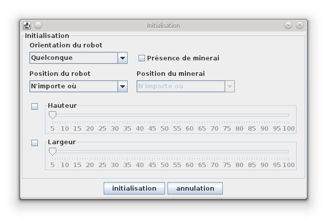 Par exemple, l'initialisation suivante :
pourra donner la situation suivante :
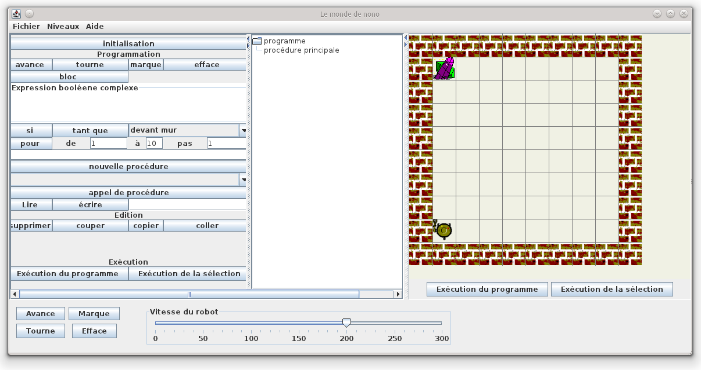
L'utilisation de la boite de dialogue et les choix dans les listes sont suffisamment explicites. Essayez-la pour commencer.
Le robot obéit à quatre instructions élémentaires :
Il est possible également en cliquant dans le terrain de faire apparaitre ou disparaitre des marques.
| Il se représente par un rectangle et plusieurs sorties (les flèches). | 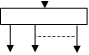 | |
|---|---|---|
| Le traitement d'un bloc consiste à traiter les instructions branchées à ses sorties dans l'ordre de la gauche vers la droite. | ||
| L'instruction conditionnelle se représente à
l'image d'une des deux figures ci-contre.
La question C peut prendre les valeurs vues précédemment : "devant mur", "sur minerai"... |
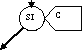 | 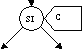 |
|---|---|---|
Son traitement se fait ainsi :
|
||
| L'instruction itérative "Tant que" se
représente à l'image de la figure ci-contre.
La question C peut prendre les valeurs vues précédemment : "devant mur", "sur minerai"... |
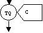 |
|---|---|
| Son traitement se fait ainsi : Tant que la réponse à C
est oui, la sortie est traitée. Ou plus exactement, si la réponse à la condition est OUI, l'instruction indiquée par la sortie est traitée, puis la condition C est réévaluée, si sa réponse est toujours OUI, la sortie est traitée et ainsi de suite jusqu'à ce que la réponse à C donne NON. Remarque :
|
Un exemple de programme :
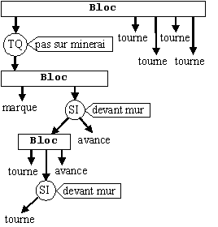Un programme commence toujours par un bloc. Une sortie pointe nécessairement sur une instruction (élémentaire, un bloc, un si, un tant que). Le programme forme un arbre d'instructions dont la racine est un bloc (le bloc dit "principal") et dont les feuilles sont des instructions élémentaires.
Le programme s’exécute en commençant par la racine, de haut en bas et de la gauche vers la droite. Il se termine à droite du bloc principal.
Par exemple, l'exécution du programme précédent se déroule ainsi : La flèche la plus à gauche du premier bloc est traitée. C'est un "tant que". Si le robot n'est pas sur du minerai, la sortie de ce "tant que" est traitée. Le robot pose une marque. Ensuite, c'est un "si", de deux choses l'une :
Le bloc est terminée. La condition du "tant que" est à nouveau évaluée, s'il n'est pas sur du minerai, la même chose est répétée. Mais s'il est sur du minerai, le "tant que" est terminé et programme continue après le "tant que", en l'occurrence, il tourne, tourne, tourne, tourne, probablement par exubérance.
Les parties de l'interface
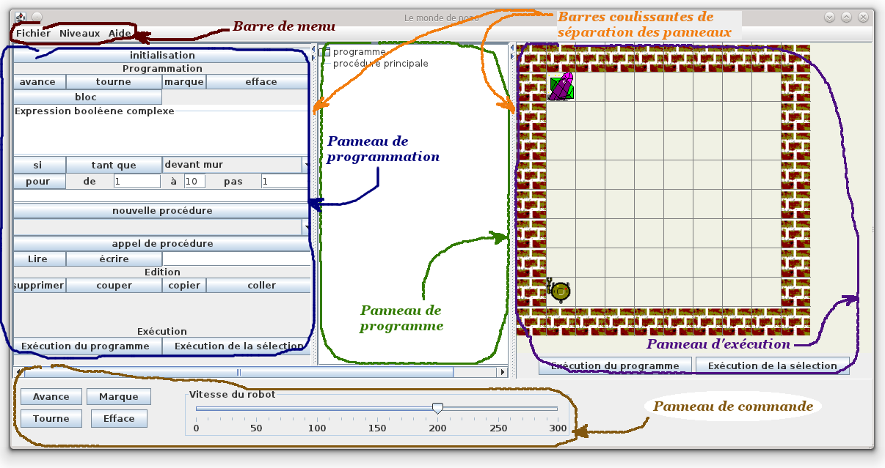Le niveau choisi au travers de ce menu permet de définir un ensemble d'instructions limité afin de permettre un apprentissage progressif.
Les exercices proposés dans le menu "Aide" précisent en général un niveau à définir pour les réaliser.
Les seules instructions autorisées ici sont les instructions élémentaires : avance, tourne, marque, efface.
Une fois le niveau 1 sélectionné, le panneau de programmation ressemble à ça :
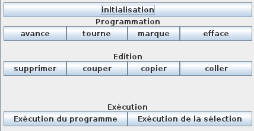
Franchement, ce niveau ne permet pas de programmer grand chose, mais il permet de se familiariser avec l'outil.
Les programmes possibles à ce niveau n'ont qu'un seul bloc : la procédure principale.
Pour ajouter des instructions, il suffit de sélectionner la procédure principale et
de cliquer sur un des boutons, avance, tourne, marque, efface. L'instruction se rajoute
au bout de celles déjà installées. L'image ci-dessous montre la situation après avoir
cliqué sur marque, avance, marque, tourne, avance, marque, tourne, avance, marque,
tourne, tourne, tourne, avance.
Une fois le niveau 1 sélectionné, le panneau de programme ressemble à ça :
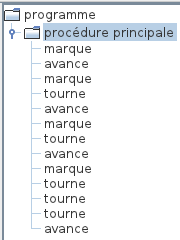
Il est possible d'insérer des instructions au milieu d'autres. Il suffit de sélectionner une instruction élémentaire. Dans ce cas, toute nouvelle instruction sera insérée à la place de celle sélectionnée.
Un exercice possible est de demander au robot de "dessiner" un carré de 2x2 marques dont le coin inférieur gauche est dans le coin sud-ouest du terrain et de se placer de manière à permettre la vision totale du carré de marques, sachant que le robot est au départ dans le coin sud-ouest, orienté vers le nord et que le terrain fait 5x5 de côté (murs compris).
La réponse à cet exercice est le programme précédent avec l'initialisation suivante :
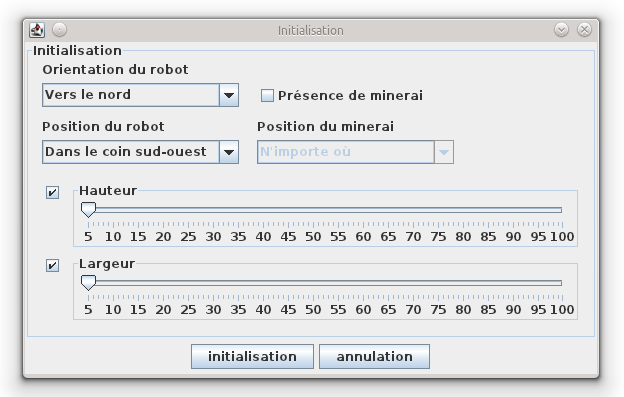
Son exécution donnera la situation suivante :
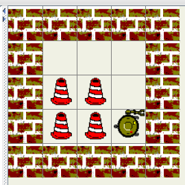
Avec la souris, il est possible de sélectionner une instruction et de la déplacer en faisant un "glisser-déposer" ou de faire une copie en maintenant la touche CTRL enfoncée.
Il est possible de sélectionner une instruction ou un groupe d'instruction avec la souris ou le clavier en utilisant SHIFT ou CTRL. Le groupe sélectionné peut être coupé ou copié avec CTRL-X ou CTRL-C ou encore en cliquant sur les boutons prévus à cet effet. Le groupe "copié" ou "coupé" peut être "collé" ailleurs. Dans ce cas, Le "coller" (CTRL-V ou le bouton) se fait avant l'instruction sélectionnée si c'est une instruction élémentaire ou à la fin du programme si c'est la procédure principale qui est sélectionnée.
Au niveau 2, deux nouvelles instructions sont autorisées :
Une fois le niveau 2 sélectionné, le panneau de programmation ressemble à ça :
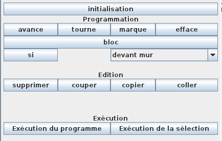
On peut voir apparaitre le bouton "bloc", le bouton "si" et une boite à liste qui l'accompagne. Cette boite à liste contient les questions auxquelles le robot pourra répondre en utilisant un "si", il s'agit de :
A ce niveau, il est possible d'ajouter des instructions "si" (ou conditionnelles) ou des blocs. L'ajout ou l'insertion de ses instructions fait comme celles du niveau 1. Remarquez qu'une instruction "si" est associée à une condition qu'il faut choisir dans la boite à liste avant de l'ajouter ou de l'insérer.
Après ajout ou insertion d'une instruction conditionnelle, celle-ci se présente un peu comme une instruction élémentaire, c'est-à-dire sans autre instruction associée. Par exemple, l'image suivante montre un programme dans lequel l'instruction "marque" a été ajoutée suivie de l'instruction "si devant mur".
Mais une instruction conditionnelle n'est pas une instruction élémentaire. Elle doit contenir au moins une instruction et au plus deux instructions.
La première instruction ajoutée correspond à la branche "alors" du "si". La seconde (si elle existe) correspond au "sinon". L'exemple suivant montre le cas du "si alors", où le robot tourne s'il est devant un mur.
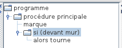
L'exemple suivant montre le cas du "si alors sinon", où le robot tourne s'il est devant un mur ou avance sinon.
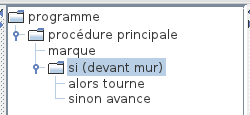
Une fois qu'il y a une instruction au bout de la branche "sinon", il n'est plus possible d'en ajouter d'autres. Bien sûr, les modifications sont toujours permises : suppressions, couper, coller, glisser-déposer, mais il ne peut y avoir qu'un "alors" et qu'un "sinon".
Dans ce cas, comment faire exécuter plusieurs instructions au robot dans la branche d'un "alors" ou d'un "sinon" ?
C'est là que l'instruction "bloc" intervient. Un bloc d'instructions
est UNE instruction qui contient autant d'instructions que voulu.
L'exemple suivant montre comment trois instructions, efface, avance, marque
sont exécutées (dans cet ordre) quand le "sinon" est activé.
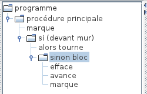
On ne peut pas encore tout programmer à ce niveau, mais certains petits problèmes commencent à devenir intéressants (cf. Les exercices proposés).
Au niveau 3, une seule nouvelle instruction est rajoutée. C'est l'instruction itérative "tant que". C'est la seule, mais pas la moindre, car elle permet cette fois de programmer à peu près tout ce qu'on veut.
Une fois le niveau 3 sélectionné, le panneau de programmation ressemble à ça :
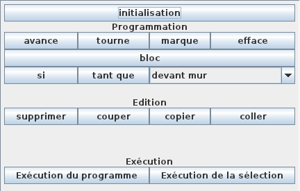
Remarquez que le "tant que" est associé aux mêmes conditions que le "si".
A ce niveau, il est possible d'ajouter des instructions "tant que" (ou itérative) en plus de celles du niveau 2. Le mode d'ajout et d'insertion ne change pas. Comme pour le "si", il faut choisir une condition dans la boite à liste avant d'ajouter ou d'insérer un "tant que".
L'exemple suivant montre un programme qui fait avancer le robot jusqu'à un mur.
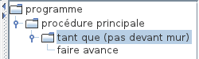
Un "tant que" ne possède qu'une et une seule branche de sortie. La branche "faire". Tout comme pour les branches "alors" et "sinon" du "si", si l'on veut que plusieurs instructions soient exécutées dans un "faire", il faut utiliser un bloc.
L'exemple suivant montre comment faire pour que le robot avance jusqu'à un mur tout en marquant son chemin.
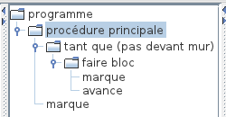
Au niveau 4, ce qui change c'est la possibilité de construire des conditions plus complexes que celles proposées dans la boite à liste.
Une fois le niveau 4 sélectionné, le panneau de programmation ressemble à ça :
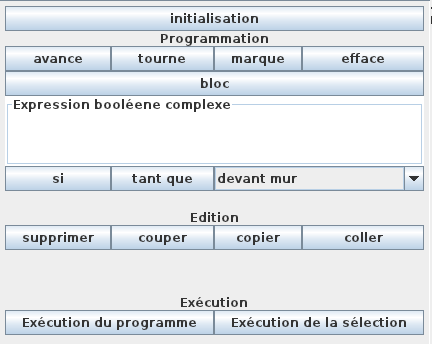
Il apparait un zone de texte dans laquelle pourra être construite une condition complexe.
Les conditions que l'on peut construire sont des expressions qui connectent des expressions simples ou complexes entre elles en utilisant les opérateurs "et" et "ou" et les parenthèses.
Un parseur s'assure que l'expression est syntaxiquement correcte en
écrivant en rouge ou en vert selon que l'expression soit incorrecte
ou correcte. Les conditions simples que l'on peut utiliser sont celles
de la boite à liste, par exemple :
pas devant mur et sur minerai
Chaque condition simple est abbrégé pour faciliter l'écriture :
L'expression précédente peut être abbrégée ainsi :
pdmr et smn
Pour utiliser une expression complexe il suffit de l'écrire dans la zone de texte. Si elle syntaxiquement correcte (écrite en vert) alors elle prime devant celle de la boite à liste. Pour utiliser une expression simple de la boite à liste, il suffit d'effacer le contenu de la zone de texte.
Ce genre de condition est parfois très utile. Car même si l'on peut tout faire sans ça, leur utilisation est souvent bienvenue notamment lorsque l'on cherche quelque chose dont on n'a pas la certitude de trouver.
L'exemple suivant montre comment le robot peut chercher du minerai
droit devant lui (il ne cherche pas ailleurs que droit devant lui).
Si on était sur de trouver du minerai, il suffirait de dire
"tant que pas sur minerai". Mais comme il est possible que le minerai
ne soit pas là et dans ce cas il faut s'arrêter avant de se cogner
contre un mur. La condition devient :
tant que pas devant mur et pas sur minerai.
A la sortie du "tant que", le robot tourne de joie s'il est sur du
minerai. En effet, il pourrait très bien être arrêté sans l'avoir trouvé.
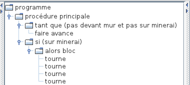
Le niveau 5 autorise l'utilisation de "procédures", c'est-à-dire l'écriture de "blocs nommés" qui définissent un comportement particulier que l'on invoquer au moment voulu.
Une fois le niveau 5 sélectionné, le panneau de programmation ressemble à ça :
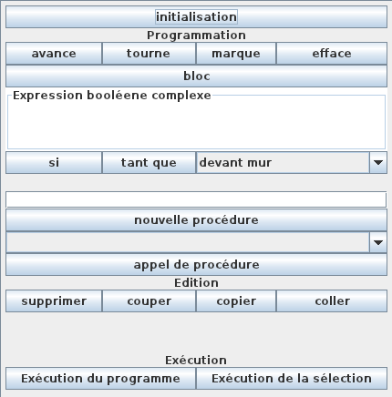
Il apparait quatre nouvelles zones. Les deux premières (en haut) permettent de définir de nouvelles procédures. Les deux suivantes (en dessous) permettent d'invoquer les procédures préalablement créées.
Avant d'appeler une procédure il faut la définir. La zone de saisie de texte permet de donner un nom à votre procédure. Le nom d'une procédure peut contenir à peu près n'importe quels caractères, même des espaces, ou même commencer par des chiffres, ou même ne contenir que des chiffres... Tout sauf des virgules, ou plutôt les virgules sont interprétées. Nous verrons comment plus loin. Pour l'instant on les évite. Evidemment, il faut aussi choisir un nom qui n'a pas été déjà choisi.
On peut par exemple vouloir écrire une procédure "youpi !" qui fait faire au robot trois tours sur lui-même. Il suffit de saisir ce nom dans la zone de texte comme le montre l'image ci-dessous
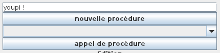
Un clic sur le bouton "nouvelle procédure" fait apparaitre dans l'arbre de programmation du panneau de programme, entre le noeud "programme" et le noeud "procédure principale" un nouveau noeud dont le nom est celui choisi, "youpi !" dans notre exemple.
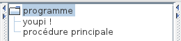
Ce nouveau noeud est tout simplement un bloc dans lequel toutes les instructions peuvent y insérées comme dans la procédure principale. Par exemple 12 "tourne" pour faire 3 tours.
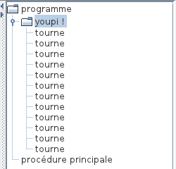
A partir de maintenant, cette procédure peut être appelée de n'importe quel point d'un programme, ou même d'une autre procédure. Pour
On peut remarquer que la procédure "youpi !" apparait maintenant dans la boite à liste en dessous. Pour définir l'appel d'une procédure dans un programme, il suffit de choisir son nom dans la boite à liste, et de cliquer sur le bouton "appel de procédure".
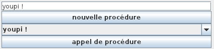
Par exemple, je peux améliorer le programme précédent pour que le robot fasse "youpi !" quand il trouve du minerai.
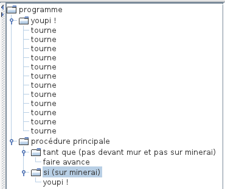
Le niveau 6 rajoute une nouvelle instruction itérative : l'instruction "pour". Elle permet de répéter une instruction un certain nombre de fois.
Une fois le niveau 6 sélectionné, le panneau de programmation ressemble à ça :
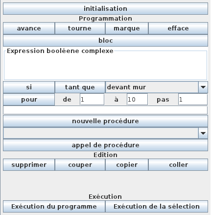
Une nouvelle ligne apparait avec un bouton intitulé "pour" et 3 champs de texte :
L'instruction "pour" contient une branche "faire" au bout de laquelle se trouve l'instruction à répéter. La répétition se fait de (le point de départ) à (le point d'arrivée) par un certain pas.
Par exemple, notre précédente procédure "youpi !" peut être améliorée. Pour faire 3 tours, il faut répéter 12 fois "tourne" (donc de 1 à 12).
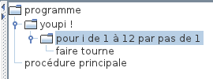
Vous avez peut être remarqué que l'apparition de la lettre i dans le programme ("pour i de 1 à 10 par pas de 1"). Cette lettre i est une variable. Elle prendra successivement les valeurs de 1 à 10 lors de l'exécution de cette boucle. Pour l'instant cette variable n'est pas exploitée ailleurs dans le code.
Il est possible de rajouter une boucle "pour" dans le faire d'un autre "pour". Vous remarquerez que la variable s'appelle j dans la boucle interne. Et en continuant, k, l, et ainsi de suite.

Avec le code précédent, le robot tourne 100 fois.
Il est possible d'exploiter la variable i dans la boucle interne, en disant par exemple pour j de 1 à i.
Par exemple, le programme suivant trace un triangle de marques, pointe en bas.
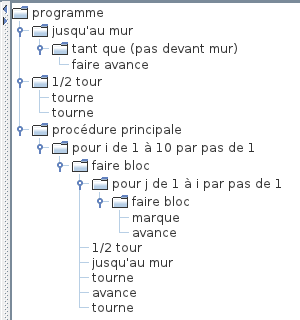
Le niveau 7 permet au robot d'interagir avec l'utilisateur pendant son exécution.
Une fois le niveau 7 sélectionné, le panneau de programmation ressemble à ça :
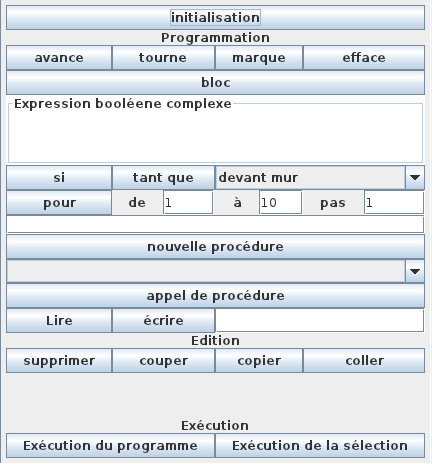
Une nouvelle ligne apparait avec un bouton "lire", un bouton "écrire" et une zone de texte.
Les instructions "lire" et "écrire" sont des instructions élémentaires. Elles sont toutes deux associées au champs de texte. L'insertion d'une instruction "écrire" se présentera dans l'arbre de programmation de la façon suivante :
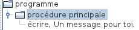
L'instruction "écrire" permet au robot d'informer l'utilisateur de quelque chose par un message dans une boite de dialogue, à l'image de la figure suivante.

L'instruction "lire" permet au robot de demander quelque chose à l'utilisateur, plus précisément une valeur entière ou un nom de variable. Lorsqu'une instruction "lire" est insérée dans un programme, une fenêtre de dialogue comme la suivante apparait :
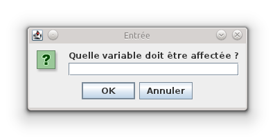
Cette fenêtre permet de préciser le nom d'une variable. Cette variable deviendra effective à l'exécution du programme. Une fois insérée, une instruction lire ressemble à ça :
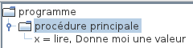
Où l'on doit comprendre que le message "Donne moi une valeur" s'affichera et la valeur donnée par l'utilisateur sera affectée à la variable x.
La notion de variables déjà abordée avec les boucles "pour" est ici renforcée. Les nouvelles variables sont créées au moment de l'exécution des instructions "lire". Lorsqu'une instruction "lire" est exécutée, une boite de dialogue comme ci-dessous est ouverte.
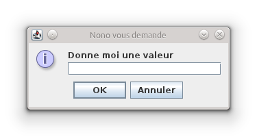Une valeur entière ou le nom d'une variable existante peut alors être donnée.
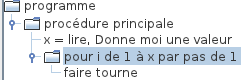
Avec le code précédent, le robot fait x quart de tours, c'est-à-dire le nombre de fois que l'utilisateur l'aura voulu.
Une chose concernant les procédures n'a pas encore été abordée jusqu'à présent. Les procédures peuvent être décorées de paramètres. Il suffit de faire suivre leur nom par des nom de paramètres, c'est-à-dire des noms de paramètres séparés par des virgules.
Au moment où une procédure avec paramètres est insérées, le programme de donner des valeurs aux paramètres. Ce peut être des valeurs entiers ou des variables.
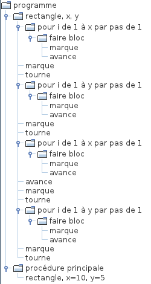 L'exemple précédent demande au robot de tracer un rectangle de (x+1) par (y+1), où x et y sont saisies à chaque exécution.